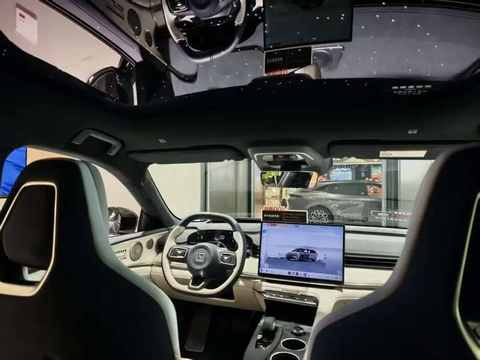
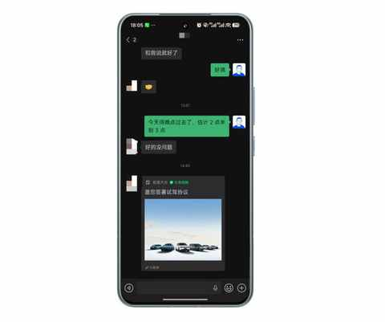
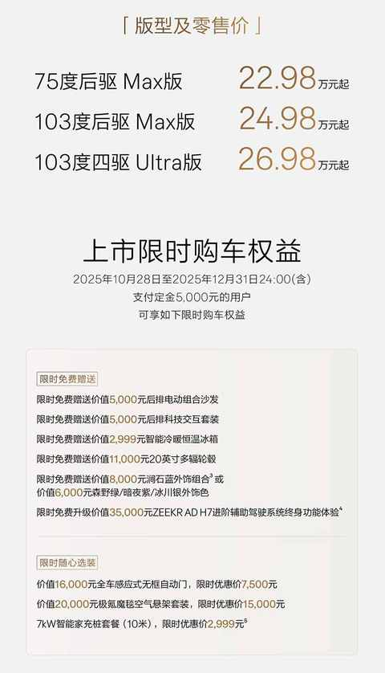
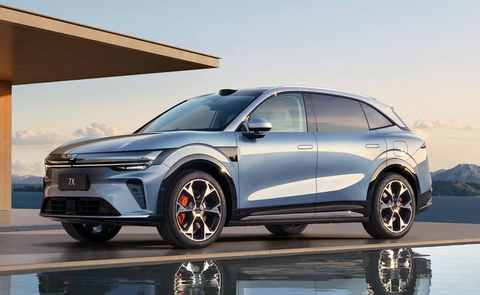

老车主终于去试驾了焕新版极氪7x：情绪依然稳定！
一、引子
作为极氪 7x 的老车主，提车解接近一年，已经开了 2w，焕新版的各种相关信息都一直在关注。
10 月底焕新版开始宣传，便仔细看了宣传物料和各种评测的文章和视频内容，整理出一篇文章，情绪没有波动是不可能的，因为上市权益诚意满满，后排沙发还赠送，我当时选配花了 5000块。
老车主看了极氪7X的焕新版之后：情绪稳定！
不过情绪整体上是稳定的，毕竟今年的竞争更激烈了，尤其是 20-25w 价位的SUV车型，各家都有产品力十足的车型在售卖。
前天去试驾了 i6，同样也整理了一篇关于试驾感受的文章。
记一次试驾体验：极氪7X车主眼中的理想i6，找到了家用SUV的另一种答案
当时试驾完，回去的时候路过极氪的门店，走进去看了看焕新版7x，紫色内饰还挺好看，小蓝灯的位置也合适。
不过最让人惊艳的还是极氪 001 的星空顶，能提供不少情绪价值。

随即加了 销售 微信，想着后面得空和他约试驾，今天午饭后正好有空，老车主终于鼓起勇气，决定去试驾换新版。
二、还是熟悉的感觉
由于太熟悉，上车之后完全没有拍照的欲望，就内饰而已，和老款没啥差别。
1️⃣ 试驾流程
① 出示驾照给销售
我是从随身办里面调出来的电子驾照，销售拍了一张照片
② 签署试驾协议
由于之前加过微信，销售直接把试驾协议发给过来，我直接点击签署

③ 先试乘到换乘点
坐在副驾，和销售聊一些关于焕新版的细节：
- 限时赠送后排沙发，是有原因的，因为存货过多
- 7x 卖的没有 9x 好，但比 001 好
- 7x 主力售卖的车型为 75 度的基础版
④ 正式试驾
抵达换乘点之后，和销售交换座位，接下来由我来开。
2️⃣ 主观试驾感受
上车后，座椅调整好，电门一踩，就是熟悉的感觉。
① 和老款不一样的地方
1）电动门需适应
试驾车选配了电动门，上车和下车的时候，我都愣了几秒。
停车的时候，旁边是 9X，开门的时候我特别小心，生怕碰到了。
2）方向盘变轻了一点
试了一会儿舒适模式后，开启了运动模式，动力强劲，感受不到是单电机的版本。
电门和刹车和老款没差别，但方向盘变轻了一点，依然有不错的操控性。
3）过减速带的晃动幅度变小
特地开车去了趟小区的地下车库，路过了每天都会走多次的一条从入口到车位的路线，其中有一个位置每次过都会车尾的左右晃动。
这次开焕新版7x 过去，发明显晃动幅度小了一点，但依然晃动，可以说是进步了，也可以说是负责底盘的团队有点过于忽视这个问题了。
4）静谧性有提高
毕竟上了双层夹胶玻璃，城区道路的静谧性比老款好不少，高速场景下还没有试过，不知道具体表现如何。
② 有印象的几个点
1）刹车调的不错
能轻易舒适刹停，不点头，当时开的时候很无感，回来回忆的时候才发现这个点
2）路感依然清晰
好路或烂路，在车内能很快感知到，压过井盖或减速带也有回馈。
3）在寻找运动和舒适的中间地带
现在依然是偏运动的调教，但没有老款那么偏，如果老款是70%的运动取向，焕新版大概是 60%，坐起来会更舒适一点。
3️⃣ 和老款的对比
做对比既简单又难，因为总有一些小的细节容易被忽略。
① 老款的运动性更强
老款的用户画像可能是：一个讲究驾驶体验，大部分时候一个人开车的上班族。
虽然整理上配置给到的很足，但舒适性有所欠缺，特别是没有上用双层夹胶玻璃和莫名的晃动。
② 新款给到的权益更足
有不少选配的，都成了标配：沙发、科技套装、冰箱……

③ 外观可能对销量的影响最大
参考我给其他人安利 7x 的经验，很多人了解一些信息之后，并没有去试驾，最主要的原因大概率就是外观了。

也和销售聊到外观的因素，不过他直接回应，而是和我说 8X 很快要推出了。
三、结语
最近几个月，送娃上下学的时候发现，路上的 7x 在变多，各种颜色的都有，甚至有好几次在小区车库遇到同样是白色的 7x。
虽然整体销量和大卖稍有距离，但卖的也还行，数据显示， 1-11月累计59118台，全年 6w+肯定是妥妥的。
试驾完焕新版 7x 之后，作为老车主的最大的感受是：
这是一台好车，但需要再破破圈，让更多的人知道，进而去试驾去体验。